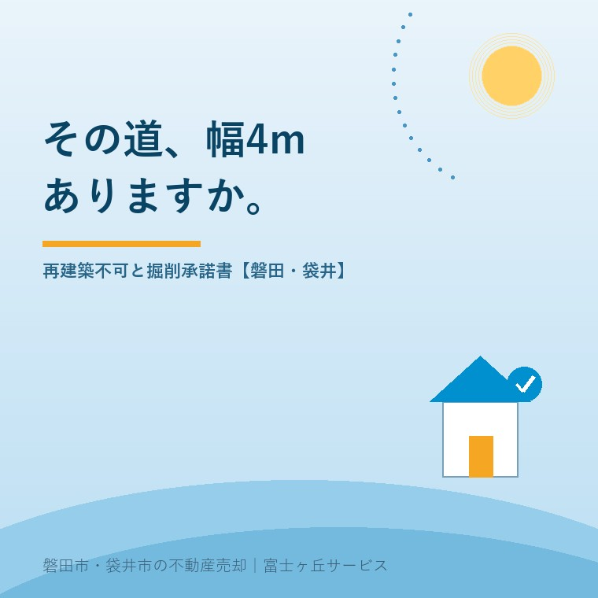

2026年8月8日｜カテゴリ：相場・地域・売却実務

この記事の要点
Q. 実家の査定を頼んだら、他社より明らかに安い金額が出ました。「道が狭いので」と言われたのですが、そんなに違うものですか。
A. 違います。それも、桁が変わるほどに。建物を建てるには、敷地が建築基準法上の道路（原則として幅員4m以上）に2m以上接している必要があります（建築基準法43条1項）。これを満たさない土地は再建築不可。建て替えも増築もできず、住宅ローンが原則つきません。さらに2025年4月の法改正で「4号特例」が縮小され、木造2階建て（新2号建築物）は大規模な修繕・模様替えにも建築確認が必要になりました。つまりフルリフォームという逃げ道まで細くなったのです。加えて前面が私道なら、水道管を入れるための掘削承諾書が要る。これが取れないと、買主も銀行も下りません。ただし磐田市・袋井市には43条2項1号の認定という現実的な出口があり、袋井市では延べ面積500㎡以内の建物について市が認定を行っています（手数料28,400円）。磐田市・袋井市・森町では、介護施設の運営から不動産事業を始めた富士ヶ丘サービスのような地域密着の会社に、査定額の内訳ごと相談するという選択肢があります。
「うちの前の道、軽トラがやっと通るくらいなんです」。磐田・袋井の集落部や旧市街のご実家で、これはごく普通の風景です。長年住んでこられたご家族にとっては何の不便もない。ところが売却の話になった途端、この一本の道が査定額を半分にも三分の一にもしてしまう。
査定額のからくりの回で、価格は「いくらで買いたいか」ではなく「いくらなら次の人に渡せるか」で決まると書きました。道は、その「次」を決める最大の要素です。今日は、なぜそこまで効くのかを、法律の条文と実際の値付けの両方から開いていきます。
ここを飛ばして話を進めると、必ずどこかで手戻りします。道に見えるものが、法律上の道路とは限らないからです。
| 種別 | 中身 | 実家でよくある姿 |
|---|---|---|
| 42条1項1号 | 道路法の道路（国道・県道・市道）で幅員4m以上 | いちばん安心。市道認定されているか市に確認できる |
| 42条1項3号 | 法施行時（昭和25年11月23日等）に既にあった幅員4m以上の道 | 旧集落の古い道 |
| 42条1項5号 | 位置指定道路。分譲時に特定行政庁が位置を指定した私道 | 昭和の分譲地の中の細い道。指定図が役所に残っている |
| 42条2項 | みなし道路（2項道路）。幅員4m未満だが、法施行時に建物が建ち並んでいた道。中心線から2m後退した線を道路境界とみなす | 磐田・袋井の旧市街で最多。セットバックが必要 |
| 道路ではないもの | 農道・里道（赤道）・水路（青道）・通路・私有地の通り抜け | 集落部の実家。見た目は完全に道だが、法律上は道路ではない |
最後の行が問題です。「舗装されていて、郵便屋さんも来て、ゴミ収集車も入る」道が、建築基準法上は道路でないことがある。農道と里道は、この地域では本当に多いのです。
調べ方は簡単で、磐田市なら建設部 建築住宅課 建築グループ（市役所西庁舎2階／0538-37-4899）、袋井市なら建築住宅課（市役所3階）で、地番を伝えて道路種別を照会します。窓口で数分です。売る前に、まずここへ。
幅員4m未満の2項道路に接している場合、建て替えるときは道路中心線から2mの位置まで敷地を後退させなければなりません。向かいが川や崖なら、反対側の境界から4mを取ります。
後退した部分は建築面積にも敷地面積にも算入できません。つまり──
セットバックは「損」に見えますが、再建築不可ではありません。建て替えは可能です。この差は決定的で、査定額の桁が変わります。
建築基準法43条1項は、建築物の敷地は道路に2m以上接しなければならないと定めています。旗竿地の竿部分が1.8mしかない、道路との間に他人名義の細長い土地が挟まっている、水路をまたいでいる──こうした土地が再建築不可です。
再建築不可の意味を、正確に押さえてください。
| できること | できないこと |
|---|---|
| 今ある建物に住み続ける、売買する、賃貸に出す、内装のリフォームをする | 新築・増築・改築・移転（＝建築確認が必要な行為）。建物を壊したら、二度と建てられない |
「壊したら建てられない」。ここが怖いところです。老朽化した空き家を、良かれと思って解体してしまった。すると更地は建物が建てられない土地になり、値が付かなくなる。解体費用の回でも触れましたが、解体は「先に道を確認してから」が鉄則です。
従来、再建築不可の家に対する現実的な答えは「建て替えではなく、大規模リフォームで住み継ぐ」でした。木造2階建て以下の小規模な建物（旧・4号建築物）は、大規模の修繕・模様替えに建築確認が不要だったからです（いわゆる4号特例）。
ところが2025年4月1日施行の改正建築基準法で、この4号特例が縮小されました。区分が組み替わり、
となり、新2号建築物は、大規模の修繕・大規模の模様替えを行う場合にも建築確認と検査が必要になりました。柱・梁・壁・屋根・階段といった主要構造部の過半に手を入れるスケルトンリフォームは、これに該当します。
再建築不可の敷地では、そもそも建築確認が下りません。つまり──木造2階建ての実家は、フルリフォームという選択肢まで実質的に塞がれたということです。平屋（200㎡以下）なら新3号として従来どおり確認不要ですが、磐田・袋井の実家は2階建てが主流です。
この改正が、2025年以降の再建築不可物件の値付けを一段押し下げました。買取業者の出す金額が去年より渋いのは、気のせいではありません。
実際の値付けを、同じ広さ・同じ立地の土地で並べてみます。あくまで考え方の目安ですが、判断の骨組みにはなります。
| 接道の状態 | 建て替え | 住宅ローン | 値付けの目安 |
|---|---|---|---|
| 幅員4m以上の市道に2m以上接する | ○ | ○ | 100（基準） |
| 2項道路・セットバック必要 | ○（敷地は減る） | ○ | 85〜95 |
| 位置指定道路（私道）＋掘削承諾書あり | ○ | ○ | 85〜95 |
| 私道だが掘削承諾書が取れない | △ | ×に近い | 50〜70 |
| 43条2項1号の認定・2項2号の許可が見込める | △（条件付き） | △（金融機関による） | 60〜80 |
| 再建築不可（見込みなし） | × | ×（原則つかない） | 20〜50 |
効いているのは住宅ローンの列です。再建築不可の土地に、金融機関は原則として住宅ローンを出しません。担保にならないからです。すると買主は現金で買える人に限られます。母数が10分の1以下になり、売れるまでの期間が延び、その分だけ値が下がる。買取が7〜8割になる理由と同じ構造が、もっと極端な形で起きているのです。
相続の場面で混乱が起きるのはここです。相続税の計算では、道路に接していない土地（無道路地）は、接道義務を満たす通路を開設するのに要する費用相当額を控除して評価します。ただしこの控除には上限があり、通路部分を差し引く前の評価額の40％までが限度です。
つまり──相続税の世界では「最大でも4割引」なのに、実際の売却では7割引でしか売れないということが起こり得ます。「相続税評価は800万円だったのに、買い手は250万円としか言わない」。この落差は、税理士の計算が間違っているのでも、不動産屋が買い叩いているのでもありません。評価のルールが違うだけです。
知らないと、ご兄弟の間で「安く売ろうとしている」という疑いが生まれます。先に説明しておくことが、家族を守ります。
接道条件はクリアしていても、前面が私道だと、もう一つ関門があります。
買主が家を建てる（あるいは古い配管を入れ替える）とき、水道管・下水管・ガス管を道路の下に通します。私道を掘るには、その私道の所有者全員の承諾が要る。これが通行・掘削承諾書です。
問題は、昭和の分譲地の私道が細かく分割され、何人もの共有になっていることです。しかもその所有者が、すでに亡くなっていたり、遠方に転居していたり、相続登記が済んでいなかったり。境界立会いの回と同じ壁が、ここでも立ちはだかります。
| 状態 | 売却への影響 |
|---|---|
| 私道の持分を持っている | 比較的スムーズ。持分の移転を売買契約に含める |
| 持分は無いが承諾書が揃う | 実務上は問題なく進む。承諾書は買主に引き継がれる形で作る |
| 持分も無く承諾書も取れない | 住宅ローンの審査が通りにくい。買主が現金客に限られ、査定が大きく割れる |
承諾料に決まった相場はありません。一般には数万円から数十万円程度ですが、それ以上を求められることもあります。売主が負担するのか買主が負担するのかも含め、契約前に決めておくべき項目です。
令和3年の民法改正で新設された民法213条の2（継続的給付を受けるための設備の設置権等）が、2023年（令和5年）4月1日から施行されています。
要点は、電気・ガス・水道といった継続的給付を受けるために、他人の土地に設備を設置したり他人の設備を使用したりしなければならない場合、必要な範囲でそれができると法律に明記されたことです。ただし条件があります。
これは大きな前進です。「承諾がもらえないから水道を引けない」という完全な袋小路は、法律上は解消されました。
ただし、実務では「だから承諾書は要りません」とはなりません。金融機関も買主も、法律上の権利があることではなく「揉めずに工事ができる確実性」を見ています。トラブルになれば工期は延び、費用も読めない。ですから承諾書は、今も取れるなら取っておく。お盆に隣家の相続人が帰ってくるこの時期は、その最大の好機です。
ここまで厳しい話が続きましたが、出口は複数あります。可能性の高い順に並べます。
| 打ち手 | 中身 | 難易度 |
|---|---|---|
| ①43条2項1号の認定 | 国や特定行政庁の定める基準に適合すれば、建築審査会の同意なしで建築可能になる。基準が公表されており、判定が早い | 低〜中 |
| ②43条2項2号の許可 | 建築審査会の同意を得て特定行政庁が許可する。包括同意基準がある自治体も多い | 中 |
| ③隣地の一部を買い増す | 接道を2m以上に広げる。隣地の買い増しが最も確実な解決 | 中（相手次第） |
| ④セットバックを済ませる | 2項道路なら、後退線を明示して測量図に落としておく。買主の不安が消える | 低 |
| ⑤隣地所有者に売る | 隣の人にとっては「自分の土地が広くなる」買い物。市場価格より高く買ってもらえる唯一の相手 | 低〜中 |
| ⑥道路の位置指定を受ける | 私道を基準に適合させて位置指定を受ける。磐田市では市が処理する事務 | 高 |
①〜②は「役所と話す」打ち手です。ここで大事なのは、認定・許可は建築の都度必要で、土地に永久に付いてくる資格ではないという点。「43条の許可が下りた土地です」と言われても、買主が別の規模の家を建てるときは改めて申請が必要になります。売買の説明では、ここを曖昧にしないことが肝心です。
そして⑤。地味ですが、私たちが最もよくお勧めする道です。再建築不可の土地は、第三者にとっては二束三文でも、隣の人にとっては値打ちがある。角が取れる、庭が広がる、駐車場が作れる。お盆に顔を合わせる機会があるなら、「もし興味があれば」と一声かけておく価値は十分にあります。
静岡県内で特定行政庁を置いているのは、静岡県・静岡市・浜松市・沼津市・富士宮市・富士市・焼津市などです。磐田市と袋井市は「限定特定行政庁」で、小規模な建築物について市が事務を担い、それ以外は静岡県が所管します。
| 市 | 市が扱う範囲・窓口 |
|---|---|
| 磐田市 | 建築基準法6条1項2号の一部および3号に該当する建築物等の確認・検査、高さ10m以下の広告塔・煙突、高さ3m以下の擁壁、仮設建築物の許可、そして道路の位置指定。窓口は建設部 建築住宅課 建築グループ（市役所西庁舎2階／0538-37-4899／平日8:30〜17:15） |
| 袋井市 | 43条2項1号の認定について、敷地内建築物の延べ床面積の合計が500㎡以内の木造戸建て住宅などの小規模なものは市が認定。それ以外は静岡県が認定。窓口は市役所3階 建築住宅課。認定手数料は28,400円 |
袋井市が公表している43条2項1号認定の要件は、次のいずれかに当たる場合とされています。
この2つは、まさに磐田・袋井の集落部の実家そのものです。「前は農道だから再建築不可でしょう」と諦めていた土地が、管理者の承諾ひとつで道が開くことがある。諦める前に、必ず窓口で確認してください。これは査定額を数百万円動かす確認です。
この地域は農業用水路が縦横に走っています。実家の前に幅50cmのコンクリート蓋がかかった水路がある、というのはごく普通です。この水路が法定外公共物として市の管理下にあるなら、占用許可を取って橋（乗り入れ）を設ければ接道と認められる余地があります。逆に、水路の名義が土地改良区や個人のままだと、話が一段複雑になります。
また、市街化調整区域の実家では、接道要件をクリアしても都市計画法の開発許可・建築許可という別の関門があります。「建築基準法はOK、都市計画法でNG」も、逆も起こります。2つの法律を別々に確認すると覚えておいてください。
富士ヶ丘サービスは磐田市見付に事務所を置き、介護施設の運営から不動産に入った会社です。私たちが査定でいちばん時間をかけるのは、建物の傷み具合ではなくこの「道」の調査です。値付けの根拠を、法律の条文と役所の回答まで遡ってご説明します。安い理由が分からない査定書ほど、ご家族を不安にさせるものはありません。
道の条件は、ご家族の努力では変えられません。だからこそ、早く正確に知ることだけが打ち手になります。知ってさえいれば、隣地への打診も、認定の相談も、値付けの説明も、すべて先手で動けます。
本文で触れた4号特例の縮小については、その後大規模リフォームに建築確認──2025年改正と古家の売り方で、大規模の修繕・模様替の線引きと、確認申請が要らない工事まで詳しく整理しました。再建築不可の家をリフォームで使い続けるつもりなら、こちらもあわせてご覧ください。
権利証が見つからないというご相談も同じ時期に増えます。そちらは権利証が見つからない実家は売れますかにまとめました。あわせてどうぞ。
ふじがおか実家カルテ｜「道」だけ先に調べます
再建築できる土地なのか。まずそこを白黒つけましょう。
ご住所をいただければ、公図・登記情報と市の道路種別照会をもとに、前面道路の種別・接道の長さ・セットバックの要否・私道の所有者・43条認定の見込みを1枚にまとめてお渡しします。再建築の可否で査定額がどう変わるかも、幅でお示しします。固定資産税の納税通知書の写真だけでも構いません。
本記事は2026年8月8日時点の公開情報に基づく一般的な解説です。道路種別・接道の可否・43条の認定および許可の要否と基準は、敷地ごとに特定行政庁（静岡県・磐田市・袋井市）が個別に判断します。認定・許可の手数料や要件は改定されることがあります。査定額の目安は当社の考え方を示したもので、実際の価格を保証するものではありません。建築の可否は建築士・特定行政庁に、私道の権利関係や承諾は弁護士・司法書士に、相続税評価は税理士に必ずご確認ください。個別のご相談は当社までどうぞ。

この記事を書いた人：大石浩之（宅地建物取引士）
磐田市・袋井市・森町で「介護×相続×空き家」に特化した不動産売却支援を行う富士ヶ丘サービスの代表取締役・宅地建物取引士。介護施設の運営から不動産事業を始めた経験をもとに、売主とご家族が困らない売却を一件ずつお手伝いしています。プロフィール
磐田市・袋井市・森町の実家じまい・相続空き家相談
固定資産税通知書だけでも相談できます
住所があいまいでも、通知書や写真から名義・道路・農地・残置物の確認順を整理します。カルテ申込またはLINEで状況を送ってください。
富士ヶ丘サービス株式会社／静岡県磐田市見付5789番地1／TEL:0538-31-3308／静岡県知事 (2) 第14083号／代表取締役・宅地建物取引士 大石 浩之